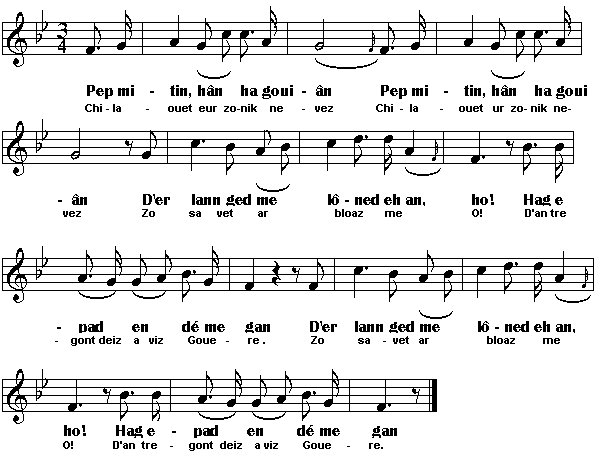

Chilaouit ur zonik nevez
Ecoutez une chanson nouvelle
Listen to a new song
Chant collecté par Théodore Hersart de La Villemarqué
dans le 1er Carnet de Keransquer (p. 245).

Mélodie: "Ar bugul"
|
A propos de la mélodie: Inconnue. Remplacée ici par "Er Bugul" (Le pâtre), tiré de "Kanomp uhel", édité par Kendalc'h en 1957. Bibliographie La Villemarqué est le seul à avoir collecté cette gwerz d'inspiration locale. Remarque On peut penser que ce chant, qui est de la même veine qu' Une bonne leçon, est dû au même compositeur, Louis Guivarc'h (1790-1844), dit "Loeiz Kamm" (Louis le Boiteux), de Kerangludic en Nizon. La mort de Joseph Coadou dont il est question pourrait bien avoir la même cause que celle du pitoyable héros de la "Leçon": l'alcoolisme. A moins que cet auteur anonyme ne soit Yves Péron (1792-1868), le paysan aisé du hameau de Lustumini dont parle le chant et qui composa L'aire neuve. La revendication d'une justice égale pour tous, excluant les incarcérations préventives sans preuves dont sont victimes les plus pauvres, complète le catalogue des "regrets patriotiques... des Bretons modernes" (sous la Restauration) qu'évoque La Villemarqué dans ses commentaires au chant Le temps passé. On sait que celui-ci est présenté comme une création collective de pèlerins venus au pardon de Notre-Dame des Portes à Chateauneuf-du-Faou. |
About the tunes Unknown. Replaced here by "Er bugul" (The shepherd), from "Kanomp uhel", a collection published by Kendalc'h in 1957. Bibliography La Villemarqué is the only collector of this "gwerz" on a local event. Remark We may assume that, for this song which is in the same vein as Let it be a lesson to all of us, we are indebted to the same composer, Louis Guivarc'h (1790-1844), alias "Loeiz Kamm" (Lame Louis), of Kerangludic near Nizon. The death of Joseph Coadou, addressed in this song, might have the same cause as that of the pitiable hero of the "Lesson": alcoholism. This nameless author could also be Yves Péron (1792-1868), the well-off farmer of the hamlet Lustumini referred to in the song, who composed The new threshing floor dance. The claim for equal justice for all, without custody while awaiting trial, in the absence of evidence, imposed on the poors as a rule, rounds off the list of "patriotic regrets...expressed by today's Bretons" (written in the Restauration time) mentioned by La Villemarqué in his comments to the song In Olden Times. As we know, the latter song is supposed to have been jointly composed by a party of peasants who had come on a pilgrimage to Notre-Dame-des-Portes chapel at Châteauneuf-du-Faou. |
|
BREZHONEK p. 264 I 1. Selaouit ur zonik nevez Zo savet ar bloaz-mañ! D'an tregont deiz a viz Gouere, Va zonik a-nevez. 2. Lakaet em spered hag em empunion Da zevel ur zon, N'ema ket hep rezon. N'ema ket hep rezon! 3. Teir eur amzer em-eus kollet O sk...deal va spered Ha pa ve lakaet na nav na dek, N'on ket vit tromplañ va spered. 4. Ne c'hall den mont kuit doc'h e di Abalamour d'an erez kriz. Gweled a ran en emgannoù War ar ruioù-ker, war an henchoù. 5. E Lumni, kornik ar fos Da foar Gouel Yann, e-kreiz an noz, E oa bet un ko... er fos, Hag a oa ennañ er repoz. 6. Hag e benn a zo bet foeltret. Klasket a oa ar jandarmed Da weled petra oa degouezhet. Ar jandarmed pa oant degouet, Meurbed emaint bet souezhet: 7. O gweled ar gwad dindano. Hag i da begañ ennañ, Ha da gas ganto da benn da benn O kas ganto da Bont-Aven. 8. Daou zen a zo bet tamallet Hag int ne soñjent ket: Kotilhar Bihan ha Per an Naour Hag a zo daou zen paour. 9. Ar re-ze zo bet prizonet Ha meurbet ne ouient ket. Dalc'het int bet en ur prizon, O ya, hep gwir ha pep rezon! 10. Ha n'int ket bet du-ze jujet Abalamour na oa test ebed. Ha n'int ket bet du-ze jujet Abalamour na oa test ebed! II 11. C'hoant am-eus c'hoazh da lared Petra zo 'nevez c'hoarvezet Da Job Koadoù a Bont-Aven A zo evel-se torret e benn. 12. Daou zen kollet n' o vek A zo d'an holl dud da weled. An hini zo bet tamallet. Tri miz a brizon e-deus bet. KLT gant Christian Souchon |
TRADUCTION FRANCAISE p. 264 I 1. Ecoutez la chanson nouvelle Qui fut composée cette année! Elle fut faite, cette chanson nouvelle, Le trentième jour de juillet, 2. Si j'eus l'idée et l'obsession De composer une chanson, Ce n'est certes pas sans raison. Oh non, ce n'est pas sans raison! 3. Trois heures de temps j'ai perdu, Oui, pour rassembler mes esprits Quand même eût-ce été neuf ou dix, Je ne veux pas égarer mon esprit. 4. Personne ne sort de chez lui Car les esprits sont pleins de haine. Partout je vois des gens se battre Dans les rues et sur les chemins. 5. Une nuit à Lustumini On vit au détour d'un fossé, - C'était la foire de Saint-Jean - Quelqu'un qui semblait reposer. 6. En fait, il avait la tête brisée. On alla quérir les gendarmes Afin qu'ils fassent un constat. Lorsque ceux-ci sont arrivés, Ils ont été bien étonnés 7. De voir le sang couler sous eux. Une fois que, l'ayant saisi, Ils le transportaient tout au long Du chemin jusqu'à Pont-Aven. 8. Deux hommes furent accusés Et ils ne se doutaient de rien: Cotillard et Pierre Le Naour Lesquels sont pauvres, tous les deux. 9. En prison on les a jetés. Ils ne savaient rien de l'affaire. On les a gardés en prison, Au mépris du droit et du bon sens! 10. On ne leur fit point de procès En l'absence, là-bas, de tout témoin. On ne leur fit point de procès En l'absence, là-bas, de tout témoin. II 11. J'aurais bien encore envie de dire Ce qu'il arriva récemment A ce Job Koadou de Pont-Aven, L'homme [?] à la tête fracassée... 12. Deux hommes ont expié à tort [?]: Pour faire un exemple pour tous! Quiconque est ainsi accusé Demeure trois mois en prison! |
ENGLISH TRANSLATION p. 264 I 1. Listen all to a new ditty Which was composed this very year! On the thirtieth of July, And my ditty is a new one. 2. If I set my head and my mind At composing a song, It was not without a reason. Without a reason it was not! 3. I spent three hours 'time Collecting my mind And would have spent nine or ten hours, Just to make sure it was not misled. 4. No one ventures out of doors Lest they would be exposed to unrelenting hatred. I see brutal frays everywhere, In the streets and on the roads. 5. At Lustumini, in the bend of a ditch At Saint John's fair, amidst the night, Someone was found lying, As if he was resting out there. 6. But his head was shattered. They called for the gendarmes To make a report. When the gendarmes turned up, They were very much upset 7. At the sight of the blood trickling When they lifted the body, And all along the way When they carried it to Pont-Aven. 8. Two men were suspected Who were aware of nothing: Little Cotillard and Pierre Le Naour Who were beggars, both of them. 9. Those were imprisoned And did not know why. And they were kept in jail, Regardless of the law and common sense! 10. And they never were tried In absence, there, of any witness. And they never were tried In absence, there, of any witness. II 11. I would feel like also mentioning What happened recently To Joe Coadou of Pont-Aven The one [?] whose head was shattered. 12. Two men were wrongfully punished [?]: To make an example of them! Whoever is suspected of a crime Has to sit three months in jail! |